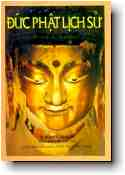

BuddhaSasana
Home Page
This document is written in Vietnamese, with Unicode
Times font
|  |
Viện Nghiên Cứu Phật Học Việt Nam Ðức
Phật Lịch Sử
|
Lời Giới ThiệuÐôi nét về tác giả quyển Ðức Phật Lịch Sử H. W. Schumann là học giả người Ðức sinh năm 1928. Ông nghiên cứu ngành Ấn Ðộ học, các tôn giáo đối chiếu và nhân chủng xã hội học tại Ðại học Bonn (Ðức). Ông nhận rằng tiến sĩ năm 1957 với luận án Triết học phật giáo. Từ 1960 đến 1963 ông là giảng sư Ðại học Ấn Ðộ ở Benares, Ấn Ðộ. Năm 1963 ông tham gia công tác Bộ Ngoại giao và lãnh sự Cộng hòa liên bang Ðức, phục vụ ngành ngoại giao và lãnh sự của Tây Ðức tại Calcutta (Ấn), Rangoon (Miến), Chicago (Mỹ) và Colombo (Srilanka). Trong nhiều năm, ông đã đảm trách văn phòng Ấn Ðộ tại Bộ Ngoại giao Ðức quốc. Hiện nay (1989), ông là Tổng lãnh sự của CHLB Ðức tại Bombay (Ấn). Trong suốt mười bảy năm ở Á Châu, Tiến sĩ Schumann đã viếng thăm tất cả mọi nơi chốn liên hệ đến cuộc đời Ðức Phật và thuyết giảng đạo Phật tại Ðại học Bonn. Các tác phẩm gần đây nhất của ông là: "Buddhism: An Outline of Its Teachings and Schools" (Ðạo Phật: Sơ Lược Các Giáo Lý và Tông Phái, 1973), quyển này trong bản dịch tiếng Ðức đã được in năm lần, và một quyển sách hướng dẫn về tranh tượng Phật Giáo Ðại Thừa và Mật Tông là quyển "Buddhist Imagery" (Tranh Tượng Phật Giáo, 1986). Quyển "Ðức Phật Lịch Sử" này phối hợp một công trình nghiên cứu uyên thâm về Kinh Tạng Pàli cũng như lịch sử Ấn Ðộ và tính cách quen thuộc thân thiết với môi trường Ấn Ðộ của vị học giả này. Nhà xuất bản Arkana (1989) Lời Giới Thiệu Tác phẩm "Ðức Phật lịch sử" là một công trình nghiên cứu uyên thâm do tiến sĩ H. W. Schumann, một nhà Ấn Ðộ học người Ðức biên soạn và xuất bản đầu thập niên 90, sau 17 năm sống tại Ấn Ðộ để nghiên cứu đạo Phật và du hành khắp vùng đã in dấu chân hoằng hóa của đức Phật cách đây 2500 năm. Tác phẩm này giới thiệu bậc Ðạo sư như một vĩ nhân trong lịch sử tư tưởng nhân loại đã đem niềm lại niềm tự hào cho đất nước Ấn Ðộ trước lòng ngưỡng mộ của thế giới Ðông Phương cũng như Tây Phương trong bao thế kỷ qua. Ðó là hình ảnh của bậc Ðạo sư giản dị nhưng trí tuệ siêu việt, đã thuyết giảng giáo lý Trung Ðạo được thiết lập trên nền tảng vững chắc của Bốn Chân Lý Vi Diệu và Mười Hai Nhân Duyên, đưa ra một nhân sinh quan và vũ trụ quan mới cho xã hội Ấn Ðộ mang cổ đại truyền thống Vệ-đà hàng ngàn năm trước đã gây bao nỗi chán nản thất vọng cho những người mong cầu các kinh nghiệm tâm linh như thật đem lại ánh sáng Giác Ngộ Chân Lý. Bước đường hành đạo của đức Phật thật sinh động trong khung cảnh Ấn Ðộ cổ đại được minh họa bằng các trích đoạn kinh kệ từ Tam Tạng Pàli nguyên thủy đầy thiền vị hòa lẫn thi vị, cùng một số địa đồ đầy đủ chi tiết các vùng đất xưa từng ghi dấu chân đức Phật Thế Tôn, từ vườn hoa Lumbini, nơi ngài đản sanh cho đến rừng Sàli ở Kusinàrà, nơi ngài viên tịch trong Niết-bàn tối hậu. Phật giới học xưa nay đã quen thuộc với hình ảnh đức Bổn sư qua bao kinh điển cùng các tác phẩm nghiên cứu bình luận của nhiều học giả khắp thế giới, nhưng phần lớn các hình ảnh ấy đã được ít nhiều thần thoại hóa hay tiểu thuyết hóa theo quan điểm của mỗi soạn giả. Còn đặc điểm của tiến sĩ H. W. Schumann là đã dày công nghiên cứu và xây dựng hình ảnh của đấng Giác Ngộ như một người sống thật của Ấn Ðộ, với những nhận xét khách quan của một học giả nghiên cứu có hệ thống rõ ràng theo phương pháp khoa học. Cái nhìn của học giả H. W. Schumann về đức Phật có vẻ khác lạ với quan niệm về đức Phật của Phật tử Việt Nam, nhưng đó chính là điều bổ ích làm tăng giá trị của quyển sách trong sự đóng góp vào kiến thức Phật học của tôn giả cùng Phật tử Việt Nam. Riêng tôi được đọc sách này qua bản dịch tiếng Anh của ông M.O'C. Walshe, người mà tôi đã gặp và làm việc chung tại Luân Ðôn trong Giáo Hội Tăng Già Anh Quốc (English Sangha Trust) nhiều năm qua. Ông Maurice Walshe là người Anh gốc Ðức, một nhà Phật học nổi tiếng, đã dịch quyển "Ðức Phật Lịch Sử" này; vì vậy quyển sách không những có giá trị về phương diện ngôn ngữ do sự hợp tác của soạn giả và dịch giả trong sự hiểu biết thấu đáo về Phật giáo nguyên thủy cùng ngôn ngữ Ðức-Anh. Nhận thấy tác phẩm này có công dụng thực tiễn phương diện nghiên cứu Phật học rất cần thiết cho Viện Nghiên Cứu Phật Học Việt Nam và giới Phật tử Việt Nam trong giai đoạn hiện tại, tôi giao phó việc phiên dịch tác phẩm sang tiếng Việt cho cư sĩ Nguyên Tâm Trần Phương Lan, giáo sư phụ trách môn Anh Văn Thuật Ngữ Phật học tại Học Viện Phật Giáo Việt Nam, Thành Phố HCM, cũng là một dịch giả của Bộ Jàtaka (Kinh Bổn Sanh hay Chuyện Tiền Thân Ðức Phật) thuộc Tiểu Bộ Kinh, tạng Pàli, một tác phẩm đắc sắc thấm đậm truyền thống phong tục xã hội đời thường ở cổ Ấn Ðộ từ thời đức Phật tại thế cùng Thánh chúng của ngài cho đến vài thế kỷ sau qua những câu chuyện đầy tình người hòa lẫn hương đạo. Với niềm mong muốn các giới nghiên cứu Phật học Việt Nam đón nhận một quyển sách có giá trị mới ra đời, cùng cống hiến cho Phật tử và độc giả Việt Nam một công trình nghiên cứu thấu đáo. Chúng tôi xin trân trọng giới thiệu dịch phẩm "Ðức Phật Lịch Sử". Xuân Ðinh Sửu, 1997 Lời Tựa Của Tác Giả Thật hiếm nhân vật trong lịch sử tư tưởng nhân loại từng có ảnh hưởng rộng lớn và lâu dài như đức Phật Siddhattha Gotama, và cũng không ai từng để lại dấu ấn sâu đậm trên toàn Châu Á như ngài. Ðạo giáo do ngài sáng lập không chỉ đem lại nguồn an ủi cho vô số người mà còn cung cấp nền tảng học thuyết nhân bản cao thượng và một di sản văn hóa vô cùng tế nhị. Bài thuyết pháp đầu tiên do đức Phật dạy tại Lộc Uyển (Sàrnàth) gần Benares năm 528 trước CN là một sự kiện lớn đem lại những kết quả đầy lợi lạc liên tục mãi đến thời đại này. Nhan đề "Ðức Phật Lịch Sử" nói lên cả chủ điểm của quyển sách cùng các giới hạn phạm vi của nó. Sách này không đề cặp các đức Phật phi lịch sử trong quá khứ và tương lai vẫn thường được nhắc đến qua Kinh Ðiển Phật giáo; nó cũng loại bỏ các truyền thuyết hoang đường bao phủ quanh cá nhân của đức Phật lịch sử, ngoại trừ những điểm có thể tìm thấy tính chất lịch sử trong đó. Sách này bàn đến con người với những đặc tính phi thần thoại của một bậc Ðạo Hiền Trí, cùng với thời đại ngài sinh trưởng và hoàn cảnh chính trị xã hội đã tạo điều kiện cho ngài thực hiện sứ mạng cao cả đưa đến thành công như vậy. Vì trước đây đã có nhiều sử sách về cuộc đời đức Phật, nên một quyển lịch sử mới ra đời cần có sự minh chứng rõ ràng. Ðiều này nằm trong sự thật là ngành Ấn Ðộ học ở cương vị một khoa học cuối cùng đã chịu bước ra khỏi tháp ngà từ hai thập niên vừa qua và giờ đây chuyển hướng nhìn theo cách quan sát kỹ các đại tư tưởng gia Ấn Ðộ trong bối cảnh các biến cố của thời đại cùng môi trường xung quanh các ngài. Thời đại đức Phật, khoảng thế kỷ thứ sáu đến thế kỷ thứ năm trước CN, đã được soi rọi trong một làn ánh sáng mới mẻ, kết quả của nhiều cuộc nghiên cứu đầy công phu vừa qua. Giờ đây đức Phật không còn được nhìn như một thánh nhân đang du hành trên hư không, ta có thể nói như vậy, mà là một nhà sáng lập đầy trí tuệ về mọi vấn đề thế gian, đã hiểu biết cách tận dụng các hòan cảnh chính trị với tài năng lãng đạo có kế hoạch tinh xảo, quả thật, giống như một nhân vật có thể sánh với đệ nhất vĩ nhân trong thời hiện đại là Mahàtma Gandhi (bậc Ðại trí Gandhi), một người đã hoàn thành xứ mạng của mình không chỉ vì đó là một người Ấn Ðộ có đức độ thành tín mà còn là một luật sư xuất chúng và là một tư tưởng gia có một đầu óc thực tiễn. Không có thời kỳ nào trong lịch sử thực sự là thời đại "cổ sơ hoàn hảo" cả, và thời đức Phật cũng không phải là ngoại lệ như đã được chứng tỏ qua sự quan tâm của dân chúng đến các tân học thuyết về giải thoát mới xuất hiện. Chúng ta muốn công bằng nhận xét thuở đó như một thời đại con người không khác chúng ta về trí thông minh cũng như về tiêu chuẩn đạo đức, nhưng chỉ có một thế giới quan khác ta, và ít có quyền năng kỹ thuật đối với các sức mạnh thiên nhiên mà thôi. Còn con người thời ấy cũng bị các dục vọng chi phối giống hệt như chúng ta ngày nay vậy. Nhiều người theo đạo Phật đôi khi chủ trương rằng cá nhân đức Phật không quan trọng, vì rằng không phải các sự kiện thoáng qua trong quãng đời ngài, mà chính toàn thể giáo lý vượt thời gian của ngài mới đáng cho chúng ta chú tâm. Cũng có vài điều cần bàn về quan điểm này, và quả thực chúng ta đặt đức Phật ra ngoài hệ thống giáo lý của ngài mà không loại trừ một yếu tố căn bản nào trong đó. Song về phương diện khác, mỗi quan điểm triết lý là một cách giải thích chứng minh hợp lý thái độ tinh thần của tư tưởng gia sáng tạo ra nó. Một người khác hay một người cùng ở trong các hoàn cảnh khác nhau đã có thể phát triển thái độ tâm lý khác và do vậy có thể lý luận cách khác, nghĩa là người ấy có thể suy tư cách khác. Như thế, người sáng lập hệ thống giáo lý xứng đáng được quan tâm như một cá nhân trong bối cảnh thời đại của vị ấy, nhất là đối với con người Phương Tây vẫn thường suy nghĩ theo tương quan lịch sử; đối với họ. Phương pháp đạt một tri kiến toàn diện cũng đáng chú ý như Thực chất của nó vậy. Hệ thống tôn giáo triết lý hướng đến giải thoát mà đức Phật thuyết giảng cho người Ấn Ðộ đương thời trong vòng 45 năm hành đạo của ngài được phát họa ở đây trong hình thái cổ sơ nhất từng được biết đến. Còn các độc giả nào muốn tìm hiểu những sự phát triển về sau của giáo lý đức Phật cần tham khảo một sách khác của tôi: "Buddhism, An Outline of Its Teachings and Schools" (Ðạo Phật: Sơ Lược Các Giáo Lý và Tông Phái), NXB Rider, London. Vì trong sách biên khảo này chúng tôi không quan tâm đến các chi tiết triết lý, mà chỉ chú trọng các mối tương quan hoặc sự kiện lịch sử của cá nhân, nên khả dĩ chấp nhận việc nêu ra các lời dạy của bậc Ðạo Sư trong hình thức giản lược hoặc diễn dịch cho dễ hiểu. Như thế lời dạy có thể sinh động hơn là được trình bày theo lối văn thánh điển thường trùng lập, đó là sản phẩm của nhiều đại hội Tăng chúng duyệt Kinh Tạng Pàli. Kinh điển bằng ngôn ngữ Pàli nguồn quan trọng nhất đối với người viết lịch sử đức Phật, như vậy các danh từ riêng và thuật ngữ Phật học ở đây đều theo tiếng Pàli. Ví dụ: Nibbàna (Pàli) thay vì Nirvana (Sanskrit). Những danh từ hay thuật ngữ khác đều theo hình thức nào thông dụng nhất: Sanskrit, Prakrit Hindì. Lẽ ra có thể minh họa sách này với nhiều tranh ảnh hình tượng Phật. Nhưng tôi đã tránh làm điều này vì các ảnh tượng của đức Phật qua nghệ thuật Ấn Ðộ chỉ xuất hiện khoảng bốn thế kỷ rưỡi sau khi bậc Ðạo Sư tịch diệt, không lâu trước CN và chúng tiêu biểu, không phải đức Phật Gotama lịch sử mà là bậc Ðại Siêu Nhân (Mahàpurisa) đã được biến thành huyền thoại thần kỳ. Như vậy việc đưa những tranh ảnh nghệ thuật Phật giáo vào đây có thể tạo nên những yếu tố huyền thoại đã được gạn lọc ra từ đầu. Ðức Phật lịch sử là đức Phật không có hình tượng nào cả. Tôi chân thành cảm tạ tất cả những vị giúp tôi thực hiện quyển sách này. Trước tiên là hiền phụ của tôi trong suốt năm năm liền đã dành mọi buổi chiều tối yên lặng làm việc, trước ở Bonn và về sau ở Colombo, vì vậy phải hy sinh nhiều dự án cộng tác khác. Tôi cũng hết lòng cảm ơn Thượng Tọa Ðại Trưởng Lão người Ðức, tôn giả Nyànaponika, ở Sơn Lâm Thảo Ðường (the Forest Hermitage), Kandy, Tích Lan, về sự hỗ trợ rất hào hiệp và nỗ lực kiên trì ngài dành cho tôi. Mặc dù bận rộn các tác phẩm văn học của ngài cùng các nhu cầu biên tập của Hội Xuất Bản Phật Học, ngài cũng tìm được thời giờ đọc bản thảo của tôi thật cẩn thận. Những ý kiến bình luận của ngài đã đóng góp rất lớn vào việc cải thiện tính cách chính xác trong vài phần của sách này. Cuối cùng nhưng không kém quan trọng, tôi xin tỏ bày lòng biết ơn đối với ông M. O'C. Walshe, người dịch sách này sang tiếng Anh. Dịch giả nguyên là giảng sư đại học môn Văn Chương Ðức Ngữ, Phó Chủ Tịch Hội Phật học ở Luân Ðôn, đã từng dịch bộ Dìgha Nikàya (Trường Bộ Kinh) sang tiếng Anh, và là tác giả nhiều sách khác nữa, quả thật không có ai đầy đủ khả năng hơn để đảm trách công tác phiên dịch này. H. W. Schumann -ooOoo- Chú
Thích Về Bản Niên Ðại Ðôi lời giải thích về niên đại của đức Phật lịch sử ghi trong sách này, theo bản niên đại đã được hiệu đính của Tích Lan và đa số chấp nhận, đức Phật đã sống trong khoảng từ 563 đến 483 trước CN. Khuyết điểm rõ ràng của bản niên đại này được nhiều nhà Ấn Ðộ học trước kia công nhận đã khiến Giáo sư P.H L. Eggermont đặt lại vấn đề ấy trong bốn bài báo trên tạp chí Persica giữa năm 1965 và 1979, từ đó, ông được Giáo sư Heinz Bechert ủng hộ (trong tạp chí Indoldgia Taurinensia X, 1982). Cả hai học giả đều tin rằng các sử gia viết tiếng Sinhala (Sri-lanka) đều sai và hai vị ghi niên đại của đức Phật vào khoảng 115 năm sau đó. Lý luận của các vị ấy cũng đáng chú ý nhưng cần phải triển khai thêm trước khi chúng được xem là cung cấp chứng cớ cuối cùng và đưa đến một bản mới có thể chấp nhận được được thay vào bản niên đại đã được chấp nhận trước kia. Do đó, tôi chưa chấp nhận chúng, nhưng sẵn sàng để độc giả rút bớt 115 năm từ các niên đại ghi những sự kiện trong cuộc đời đức Phật lịch sử. |
update: 14-03-2001